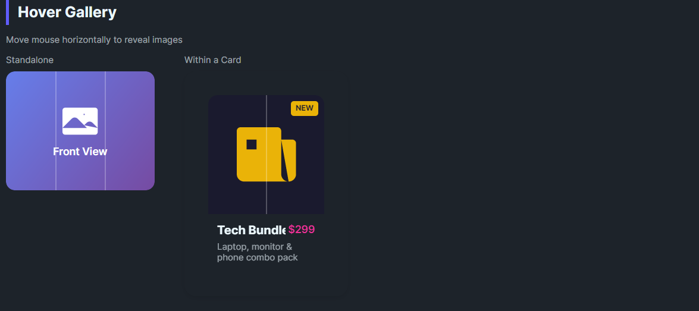

DaisyHoverGallery displays one item at a time from an item collection, switching the visible item based on horizontal pointer position. It optionally renders vertical divider lines to hint at each region. Great for “hover to preview” galleries or swatches without clicks.
| Feature | Description |
|---|---|
| Hover-based selection | Pointer movement updates VisibleIndex according to the pointer's X position across equal segments. |
| Reset on exit | Pointer exit resets VisibleIndex to 0 (first item). |
| Dividers | Optional vertical lines between segments controlled by ShowDividers, DividerBrush, and DividerThickness. |
| Property | Description |
|---|---|
VisibleIndex (int) |
Currently shown item index (0-based). Automatically set on hover; you can set it manually. |
ShowDividers (bool) |
Toggles divider rendering. |
DividerBrush / DividerThickness |
Customize divider look (default semi-transparent white, 1px). |
<!-- Basic hover gallery -->
<controls:DaisyHoverGallery Height="160" Width="200" CornerRadius="12">
<Border Background="#FF5F56" />
<Border Background="#FFBD2E" />
<Border Background="#27C93F" />
<Border Background="#007BFF" />
</controls:DaisyHoverGallery>
<!-- With custom dividers and start index -->
<controls:DaisyHoverGallery Height="160" Width="240"
VisibleIndex="1"
DividerBrush="#66FFFFFF"
DividerThickness="2">
<Image Source="ms-appx:///Flowery.Uno.Gallery/Assets/photo1.jpg" Stretch="UniformToFill" />
<Image Source="ms-appx:///Flowery.Uno.Gallery/Assets/photo2.jpg" Stretch="UniformToFill" />
<Image Source="ms-appx:///Flowery.Uno.Gallery/Assets/photo3.jpg" Stretch="UniformToFill" />
</controls:DaisyHoverGallery>Width/Height and CornerRadius for clean clipping of media content.VisibleIndex programmatically.ShowDividers for a minimalist look; increase thickness/contrast on dark backgrounds.